Geology Field Experiences Photo Gallery
Scotland, 2023
Images from our 2023 field trip (GEOL 4960) to Scotland
Wyoming
Images from teaching at Branson Field Lab (Mizzou Field Camp), near Lander Wyoming, 2007-2023
Desert SW, 2022
Images from our 2022 field trip (GEOL 4960) to the Basin and Range and the Colorado Plateau (AZ, CA, NV, UT)

Desert SW, 2019
Images from our 2019 field trip (GEOL 4960) to the Basin and Range and the Colorado Plateau (AZ, CA, NV, UT)

Scotland, 2018
Images and videos from our 2018 field trip (GEOL 4960) to Scotland
Desert SW, 2017
Images from our 2017 field trip (GEOL 4960) to the Basin and Range and the Colorado Plateau (AZ, CA, NV, UT)

Spain, 2016
Images and videos from our 2016 field trip (GEOL 4960) to Spain with Miriam Barquero-Molina and her students from Mizzou

Costa Rica, 2015
Images from our 2015 field trip (GEOL 4960) to Costa Rica

Desert SW, 2014
Images from our 2014 field trip (GEOL 4960) to the Basin and Range and the Colorado Plateau (AZ, CA, NV, UT)

Costa Rica, 2013
Images from our 2013 field trip (GEOL 4960) to Costa Rica

Desert SW, 2012
6-minute video from our 2012 field trip (GEOL 4960) to the Basin and Range and the Colorado Plateau (AZ, CA, NV, UT)

Costa Rica, 2011
Images from our 2011 field trip (GEOL 4960) to Costa Rica

Desert SW, 2010
Images and video from our 2010 field trip (GEOL 4960) to the Basin and Range and the Colorado Plateau (AZ, CA, NV, UT)
Costa Rica, 2009
Images from our 2009 field trip (GEOL 4960) to Costa Rica
Desert SW, 2008
Images from our 2008 field trip (GEOL 4960) to the Basin and Range and the Colorado Plateau (AZ, CA, NV, UT)

Costa Rica, 2007
Images from our 2007 field trip (GEOL 4960) to Costa Rica
Desert SW, 2006
Images from our 2006 field trip (GEOL 4960) to the Basin and Range and the Colorado Plateau (AZ, CA, NV, UT)
UTC Links
UTC Home Page
Department of Biology, Geology and Environmental Science
Geologic Organizations
American Geological Institute
American Geophysical Union
Geological Society of America
Visit my alma maters
University of North Carolina
University of New Hampshire
Miscellaneous
Mount Washington, NH
Mies World Headquarters
| Jonathan W. Mies Emeritus Professor of Geology Retired 2023 The University of Tennessee at Chattanooga Structural Geology Field Methods Tectonics Mineralogy Petrology X-ray Diffraction Seismology |
|
Contact Information
E-mail: jonwmies@gmail.com
Education
| Ph.D. Geology |
1990 |
University of North Carolina at Chapel
Hill |
|
| M.S. Geology |
1987 |
University of North Carolina at Chapel Hill | |
| B. S. Geology |
1981 |
University of New Hampshire, Durham |
Teaching
I routinely taught the following courses:
| Geology 1110 |
Physical Geology |
|
| Geology 4070 | The Dynamic Earth |
|
| Geology 3420 | Petrology | |
| Geology 4420 | X-Ray Diffraction Methods |
|
| Geology 4510 | Structural Geology |
|
| Geology 4520 | Field Methods in Structural Geology |
|
| Geology 4800 | Research Design |
|
| Geology 4900 | Senior Research Project |
|
| Geology 4960 | Geology Field Experience: |
|
| Northwest
Highlands, Scotland, 2018, 2023, 23 students |
||
| Basin & Range/Colorado Plat., 13 trips, 1994 to 2022, 163 students | ||
| Pyrenees, northern
Spain, 2016, 12 students |
||
| Costa Rica, 11 trips,
1995 to 2015, 148 students |
Selected Publications and Recent Abstracts
Bramblett, J., Gossett, L. (student), and Mies, J. W., 2022, Using portable document cameras and portable digital microscopes in both virtual and in-class Historical Geology and Petrology labs, Geological Society of America Abstracts with Programs, v. 54, n. 4, doi: 10.1130/abs/2022NC-374974.
Mies, J. W. and White, Jessica (student), 2021, The arcuate geometry of Onslow Bay, North Carolina, its influence on hurricane-induced microseisms, and potential relations to coastal processes, Geological Society of America Abstracts with Programs, v. 53, n. 6, doi: 10.1130/abs/2021AM-365017.
Hossain, A., Stuart, W., Mies, J., and Brock-Hon, A., 2021, Investigating Urban Heat Island (UHI) Impact for the City of Chattanooga, Tennessee Using GIS and Remote Sensing in Lackner, M., Sajjadi, B., and Chen, W-Y., eds., Handbook of Climate Change Mitigation and Adaptation, 3rd Edition, Springer.
Mies, J. W., 2020, Preliminary analysis of hurricane Dorian's microseisms from the Little Bahama Bank through Onslow Bay, North Carolina, with comparisons to hurricanes Matthew and Florence, Geol. Soc. Am. Abs. with Prog. v. 52, No. 2, doi: 10.1130/abs/2020SE-345358.
Hayes, J. A. (student) and Mies, J. W., 2019, A tale of two hurricanes: the peculiar microseisms of Matthew and Florence in Onslow Bay, North Carolina, Geol. Soc. Am. Abs. with Prog. v. 51, n. 3.
Adair, W. A. (student), Beitel, H. R. (student), Hamid, Z. A. (student), Hossain, A. A. K. M. and Mies, J. W., 2018, Exploring the potential of remote sensing and GIS for geological mapping of Woodall Shoals, GA-SC, Geol. Soc. Am. Abs. with Prog. v. 50, No. 3, doi: 10.1130/abs/2018SE-312634.
Beitel, H. R. (student), Churnet, H. G., Hossain, A. A. K. M. and Mies, J. W., 2018, Characterization of metamorphic zones in the Tennessee Blue Ridge using GIS and digital image processing, Geol. Soc. Am. Abs. with Prog. v. 50, No. 3, doi: 10.1130/abs/2018SE-312476.
Mies, J. W., 2017, Hurricane Matthew's microseismic impression on Chattanooga, Geol. Soc. Am. Abs. with Prog. v. 49, n. 3.
Mies, J. W., Brock-Hon, A. L., Churnet, H. G., Holmes, A. E., and Williams, W. K., 2016, The curricular benefits of a seismometer in UTC's geology program, Geol. Soc. Am. Abs. with Prog. v. 48, n. 3.
Mies, J. W., Holmes, A. E., and Churnet, H. G., 2014, The Costa Rican field experience at UTC: 20 years in the making. Geol. Soc. Am. Abs. with Prog. v. 46, n. 6, p. 47.
Howard, C. W. (student), Mies, J. W., Bodkin, T. E., and Brackett, D. G., 2011, Bentonite-controlled deformation of Middle Ordovician limestone at Chickamauga Dam, Chattanooga, Tennessee. Geol. Soc. Am. Abs. with Prog. v. 43, n. 5, p. 99.
Bodkin, T. E., and Mies, J. W., 2008, X-ray diffraction (XRD) analysis of human cremains and concrete. American Academy of Forensic Science 60th Anniversary Scientific Meeting, February 18-23, 2008, Washington, DC.
Mies, J. W. 1998. A geomechanical model for postorogenic fold-axis-parallel extension and its control on cross-fold joints. Geol. Soc. Am. Abs. with Prog. v. 30, n. 7, p. 62.
Mies, J. W. 1996. Automated digital compilation of structural symbols. Journal of Geological Education v. 44, p. 539-548.
Mies, J. W. 1995. Simple methods for rapid determination of lattice-preferred orientation in two dimensions. Journal of Geological Education v. 43, p. 6-10.
Mies, J. W. 1993. Structural analysis of sheath folds in the Sylacauga Marble Group, Talladega slate belt, southern Appalachians. Journal of Structural Geology v.15, n. 8, p. 983-993.
Mies, J. W. & Steltenpohl, M. G. 1993. Microstructures and quartz crystallographic fabric in the Hollis Quartzite, Pine Mountain window, Lee County, Alabama. Alabama Geological Survey Circular 172, Tuscaloosa, 43 p.
Mies, J. W. 1991. Planar dispersion of folds in ductile shear zones and kinematic interpretation of fold hinge girdles. Journal of Structural Geology v. 13, n. 3, p. 281-29.
Personal Interests
I enjoy camping/touring in our R•Pod travel trailer, sailing (Lightning), hiking, working on the house or in the yard, or tinkering with my vintage sports car ('67 Sunbeam Alpine).
Videos
COVID-Era Teaching Videos
| 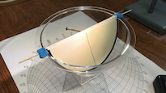 |
Structural
Geology: Stereonet: Visualization Visualization of how a stereonet relates to the corresponding lower hemisphere, how a plane relates to its pole, and how planes and poles are represented in a stereonet, using a physical model (clear acrylic hemisphere). |
| 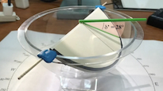 |
Structural
Geology: Stereonet: Apparent Dip How to determine apparent dip of a plane given its strike and true dip and a direction of interest (direction of apparent dip), using a stereonet. Hemisphere model is used at 06:40. |
| 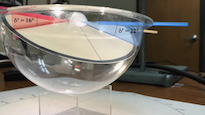 |
Structural
Geology: Stereonet: Two Apparent Dips How to determine strike and dip of a plane from two apparent dips, using a stereonet. Hemisphere model is used at 03:18. |
| 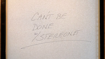 |
Structural
Geology: Stereonet: Thickness Dimensions, such as thickness and depth, cannot be determined with a stereonet. Only geometric problems can be solved with a stereonet. |
| 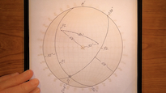 |
Structural
Geology: Stereonet: Intersection of Two Planes How to determine the line of intersection and the angle between two planes, using a stereonet. |
| 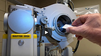 |
Demonstration
of Powder X-ray Diffraction Demonstration of powder X-ray diffraction (Philips PW1830/3550/3710), made for GEOL 4420, X-ray Diffraction Methods |
Millie, our R•Pod (2021 RP 190)
| 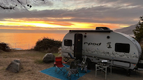 |
Adventures
of Millie, Fall 2023 Our R•Pod trip from southeast Tennessee to Oregon, California, Arizona, New Mexico, and states en route, September 10 to October 30, 2023 25-minute video |
| 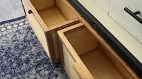 |
Millie,
Modifications, 1st 2 Years Fourteen (14+) practical modifications made during the 1st two years 3-minute video |
| Millie,
Maneuvering her into the Backyard Maneuvering Millie into a tight spot in our back yard using a trailer dolly and block and tackle 1-minute video |
Climbing/Hiking
| Lassen, 2023 Lassen Peak (lava dome), northern California 2-minute video |
|
|
Conival,
2018 Conival (Scottish munro), Northwest Highlands of Scotland, with students 3-minute video |
| Monte
Perdido, 2016 Monte Perdido, Spanish Pyrenees, with students 4-minute video |
|
 |
Grand
Canyon, 2014 Grand Canyon, northern Arizona, with students 2-minute video |
 |
SP
Crater, 2014 SP Crater (cinder cone), northern Arizona, with students 2-minute video |
Sailing
| 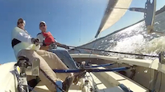 |
Sailing, Oct. 16, 2017 Sailing with a colleague on Chickamauga Lake in my Lightning 4-minute video |
| 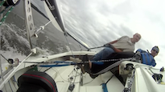 |
Sailing,
Sept. 15, 2011 Sailing with a former student on Chickamauga Lake in my Lightning 4-minute video |
Miscellaneous
| 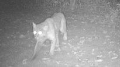 |
Stealth Cam,
the Best of 2022 Compilation of videos taken with our game camera, January to December, 2022 |
| |
Exfoliation
of Vermiculite Exfoliation of vermiculite at 900 degrees C, featuring "Big Bertha" 2-minute video |
 |
Lenny
the Sloth This sloth, Lenny, shared our cabina in Cahuita, Costa Rica Video by Chris Vernon (student) 1-minute video |
| 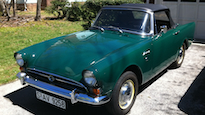 |
Sunbeam
Alpine Details of my 1967 Sunbeam Alpine, Series V 1-minute video |